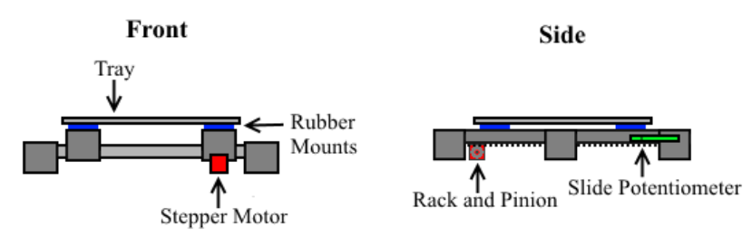

16-778, 18-578, 24-778 Spring 2015
Group G
Eric Newhall (enewhall)
Guillermo Cidre (gmcidre)
Christian Heaney-Secord (cheaneys)
Michael O'Connor (mkoconno)
Systems
- Part Separator Design
- Vision Processing Design
- Part Placer Design
- Tray Positioner Design
- Flux and Wire Dispensor Design
Tray Positioner Design
The tray positioning system works in conjunction with the part placer and the flux and
wire dispenser to allow for movement of parts in the x and y axis. The tray positioning
system is solely responsible for all movement in the y axis whereas the part placer and flux
and wire dispenser are responsible for all movement in the x axis. Every time a part
needs to be moved or accessed first the tray will move to the correct y position before
any other system moves to get to the correct x position.
The tray is placed on two sliding rails with rubber mounts to prevent the tray from
sliding while moving. The sliding rails are driven by a stepper motor that is geared with
a rack and pinion to allow for linear movement. The gearing will support a slow, high-torque
motion which is important since any large accelerations would slide the parts on
the tray. Also, to ensure that part do not slide the motor will use a ramp acceleration
and deceleration profile. A slide potentiometer will be connected to the rail so that the
microcontroller can receive feedback on the current position of the rail.

Tray Positioner Implementation